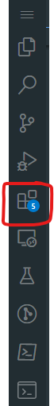
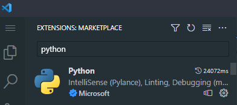
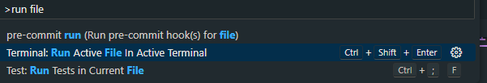

Intro to Python
TLDR
- Python is a general-purpose, open-source programming language, good for data analysis, available on many data platforms
- VSCode is a good tool in which to develop Python. PEP-8 is the widely used style guide.
- We have guidance on writing functions, data analysis in Python, Python functions, unit testing, and much more in the left-hand sidebar.
Pre-requisites
| Pre-requisite | Importance | Note |
|---|---|---|
| Levels of RAP | Necessary | Python is a key component of our approach to RAP |
| Coding Best Practice | Helpful | Some basic coding skills will help |
What is Python?
Python is an open-source programming language famous for its ease of use. It has a simple syntax, which is easier to learn and read than most languages.
It's also considered a 'high-level' language - this means you can get on with making code do what you want it to without worrying about overly technical aspects like assigning chunks of memory. This also has downsides; Python can run slower than other languages.
Broadly, Python is considered the language of choice for data science, with a growing collection of helpful packages and is a popular choice for the kinds of scripting and automation which we need to do when building Reproducable Analytical Pipelines.
Programming Environment
You'll need to have somewhere to work where you can run Python code to follow this guide. GitHub codespaces or Google Collab can be a nice tools to get started, however cannot be used for all of your work. It's a good idea to go over the RAP readiness - resources guide to understand what you need (and might be missing) for RAP!
Getting Started
You can write Python code in any program that allows you to write plain text. However, this is like running a marathon without any shoes on, uncomfortable and you are likely to run into some issues. Therefore we recommend using an Integrated Development Environment (IDE). IDEs are programs that make developing code much easier by providing a feature-rich toolset with tools such as:
- Editors
- Run-time environments
- Line numbering
- Variable Training
- Debugging tools
- Interpreters
- Auto-correction and suggestion
Whether you're new to coding or an old hand, we recommend using Visual Studio Code (aka VSCode). This has a few benefits: it's feature-rich, lightweight, and works the same across multiple platforms (Windows, Mac, and Linux). It's also already installed on most NHS environments where you might want to write code.
Other IDE's are available, such as Spyder, Eclipse, PyCharm, Sublime, Atom, and more! Some of our analytical environments use Databricks, in which you can write and execute Python code.
Python In VSCode
Once you've installed and opened VSCode, you'll want to install the Python extension for VSCode.

You can find the Extensions panel either by clicking the link above, or by pressing ctrl + shift + x.
From here you can search for and install the Python extension.

If you're familiar with working with Jupyter Notebooks, you can also download the Jupyter extension in the same way.
Hello World
Now we want to use Python to run a simple script. Create a file called hello_python.py (in VSCode, you can just press Ctrl + N to make a file). In this new file, write
This is all the code we need to test our Python install. There's a couple of ways you can run this code:
- In VSCode, press
Ctrl + Shift + p. This will bring up the Command Palette. You can do most things from here - try typing something which you're trying to do, and there's likely a command which will appear. In our case, we want to run the file, so we typerun fileand select the appropriate option -run file in Terminal.

-
As the screenshot shows, we can also run the file by using the keyboard shortcut
Ctrl + Shift + Enter. -
Alternatively, we can run the same file from outside VSCode. Open a terminal and navigate to the space where you've written your script, then run the command:
Whichever method you use, you ought to see Hello World printed to the terminal.
Environments and Packages
It's considered good practice to create a virtual environment for each of your Python projects - we explain why on this page. There are many tools which you can use to create and manage your Python environments; we recommend reading our guide to conda and our guide to venv and picking one of these two.
Data Analysis in Python
Many consider Python to be the language of choice for data analysis. One of the things which makes Python powerful is the wide range of packages and tools available for the language -- this makes it flexible enough to be useful for small-scale analysis, which happens directly on your laptop and for larger projects which use cloud resources.
To get started with analysis, take a look at our guide to basic Python data analysis operations.
If you're using Databricks or otherwise working with large datasets and distributed computing, take a look at the documentation we have on Pyspark in the sidebar. You can start with our page on what it is
SQL and Python
Whatever the scale of your data, you might need to interact with it via SQL queries. You can generate these using Python too - check out our guide on how to to so.
Writing Python Code
There are as many opinions about what constitutes good code as there are coders. It's also always a good idea to adhere to a style guide.
- For Python, we recommend using
PEP-8, which is also mentioned in our Levels of RAP - more specifically, the Google Python style-guide (which is also the core of our Pyspark style guide )
- There are tools called linters which can be used to check for these styles automatically, such as Pylint
Next, you'll want to know how to structure your Python projects, how to write good functions, and how to approach unit testing in Python.
Where Now?
You've now you've got Python installed and you've got an editor to work in. There's lots and lots of training resources about how to write Python code, here are some we've found useful:
- Python in an hour: this notebook was presented in a workshop at the Health and Care Analytics conference 2024. It's designed to give you a gentle introduction to Python and some of the things it can do, in just an hour.
- Kaggle introduction to Python
- Govt Analysis Function Introduction to Python
- freecodecamp, which has a course tailored to learning data analysis with Python
There's also plenty of resources right here on this site
- check out our guide to Python functions.
External Links Disclaimer
NHS England makes every effort to ensure that external links are accurate, up to date and relevant, however we cannot take responsibility for pages maintained by external providers.
NHS England is not affiliated with any of the websites or companies in the links to external websites.
If you come across any external links that do not work, we would be grateful if you could report them by raising an issue on our RAP Community of Practice GitHub.